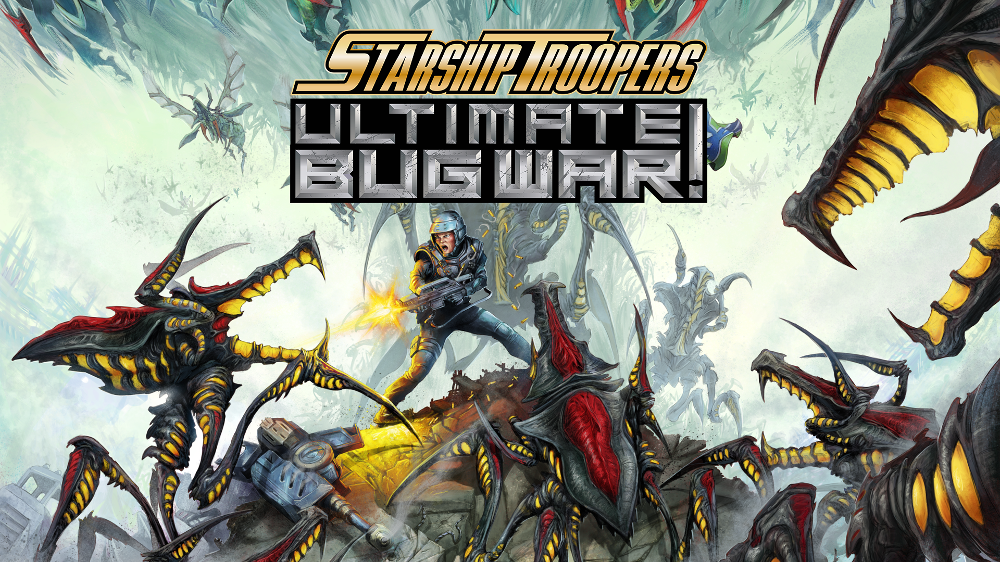

Starship Troopers: Ultimate Bug War
Starship Troopers: Ultimate Bug War! is a 2026 retro first-person shooter video game set in the Starship troopers universe. It was developed by Auroch Digital and published by Dotemu.
I worked as a generalist programmer from Pre-production through to late production.
- Adapted Existing AI systems to simultaneously work for 3D and 2D enemies.
- Working with technical artists to create a bug “wounds” system which allowed bugs to show battle damage which would directly correlate to damage dealt in game.
- Responsible for most of the UI programming, HUD, menus and the diegetic frontend.